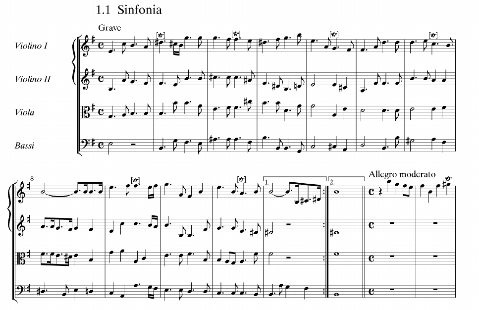
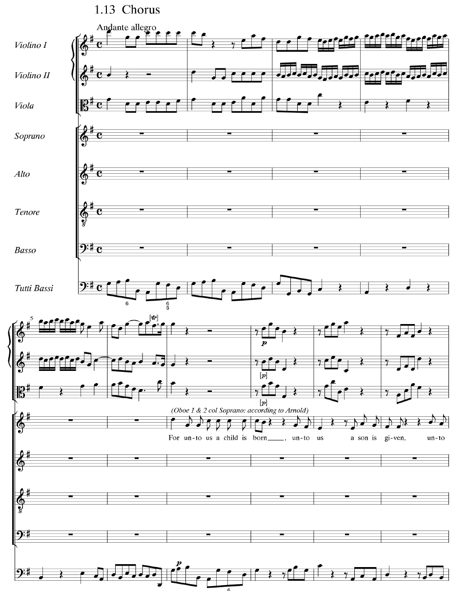
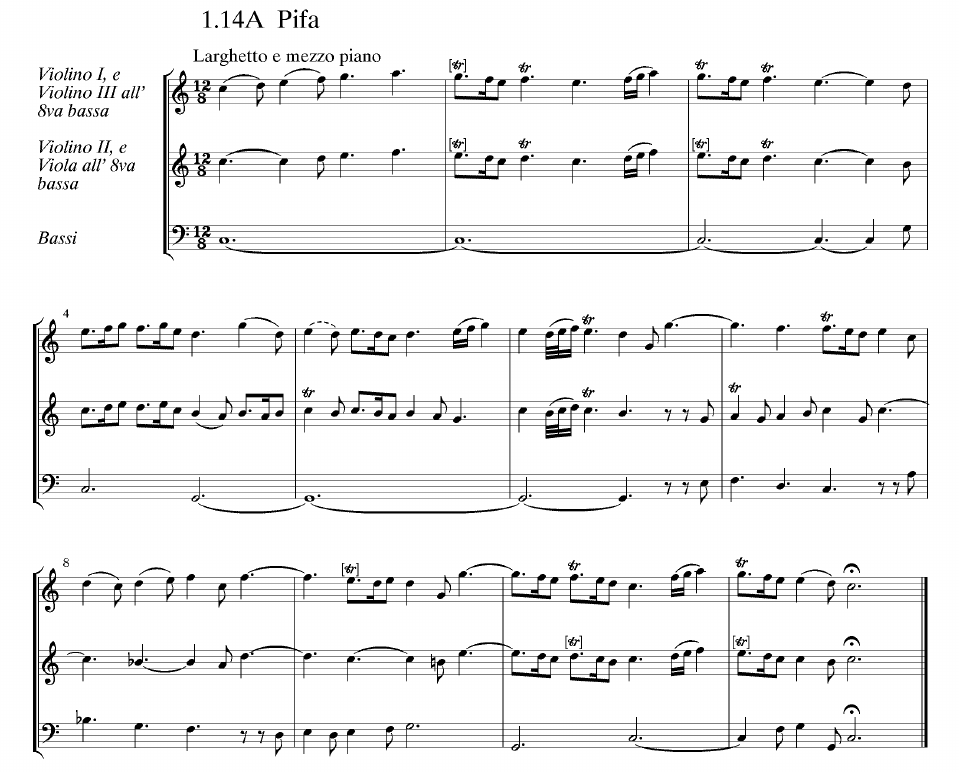
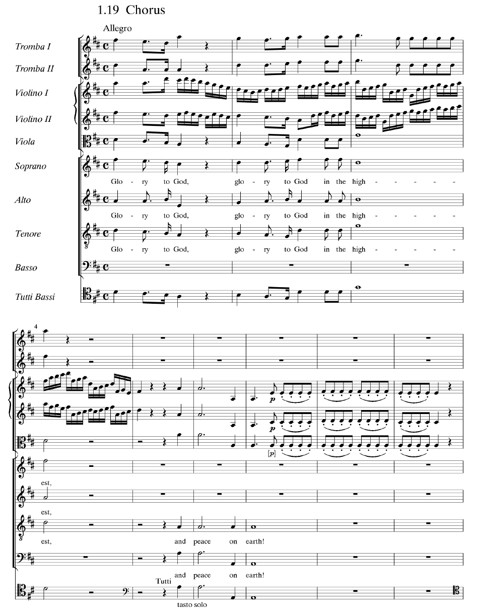
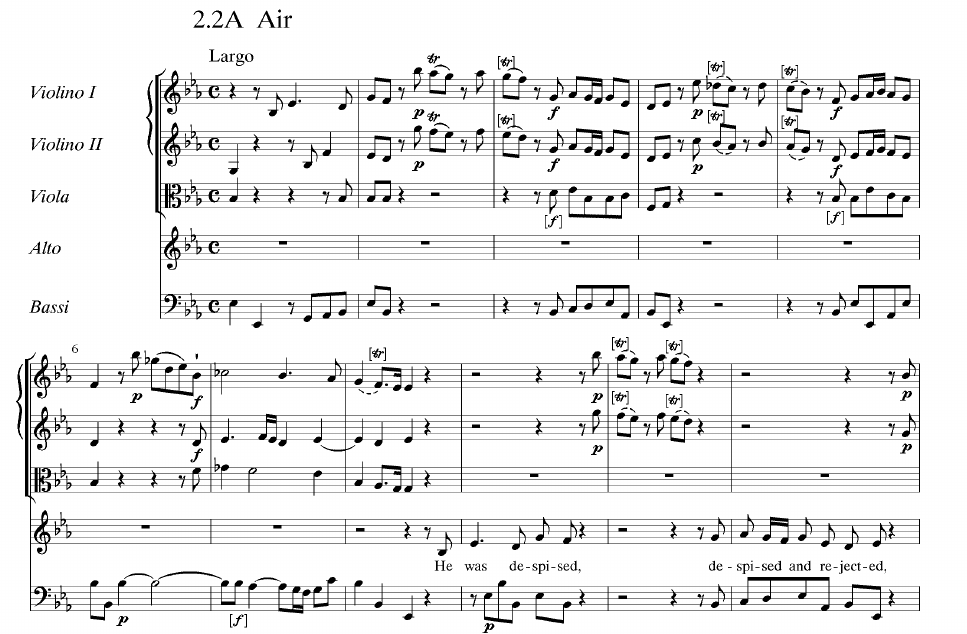
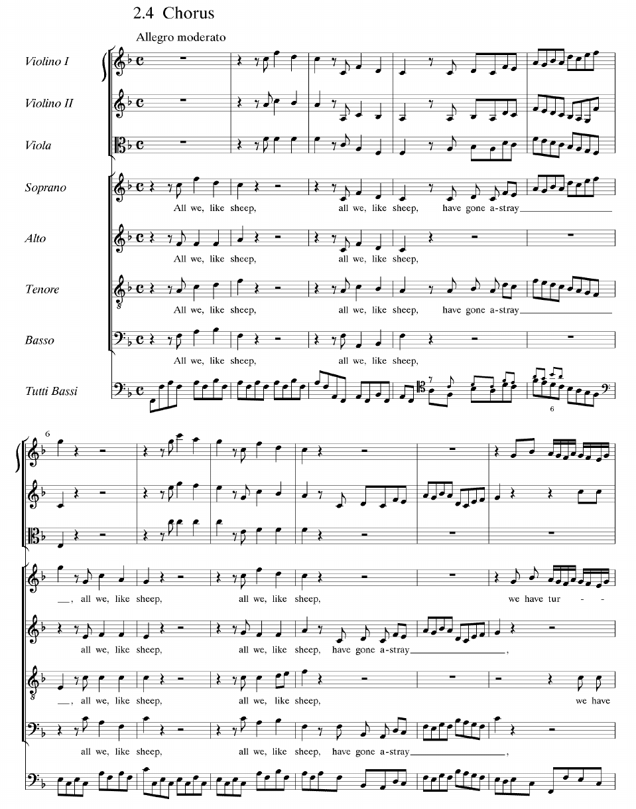
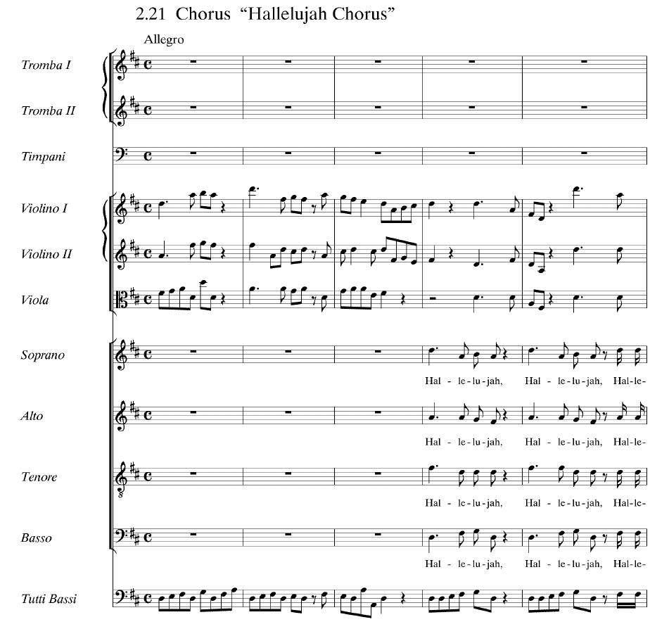
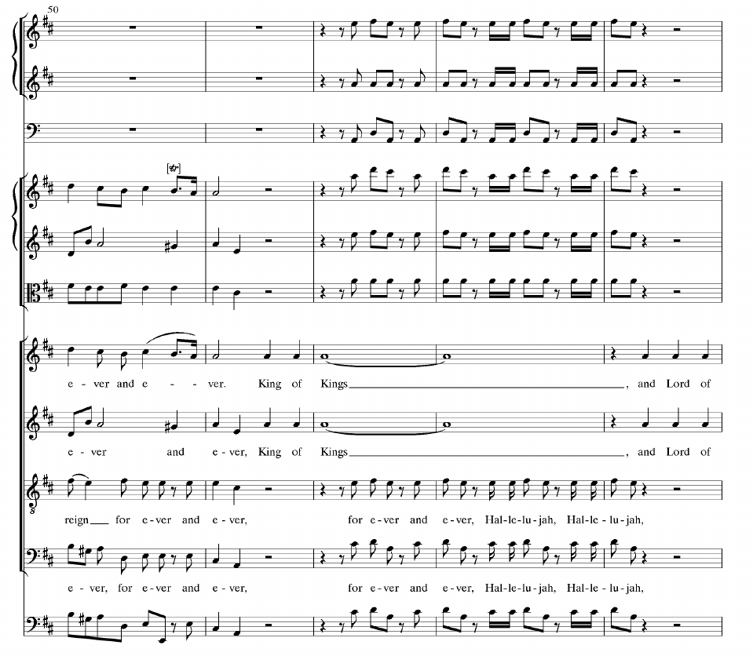
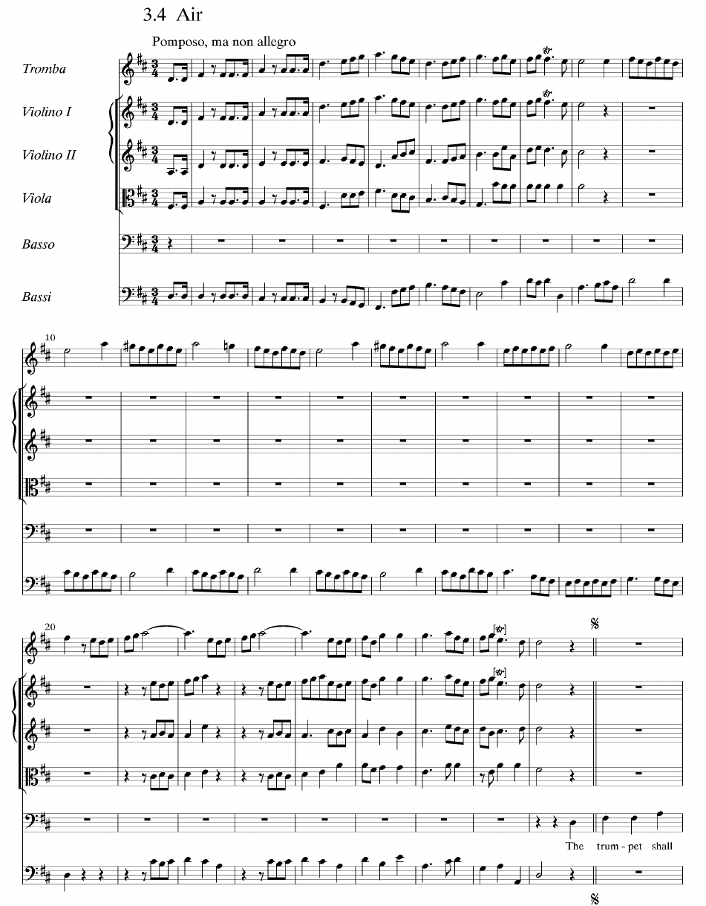
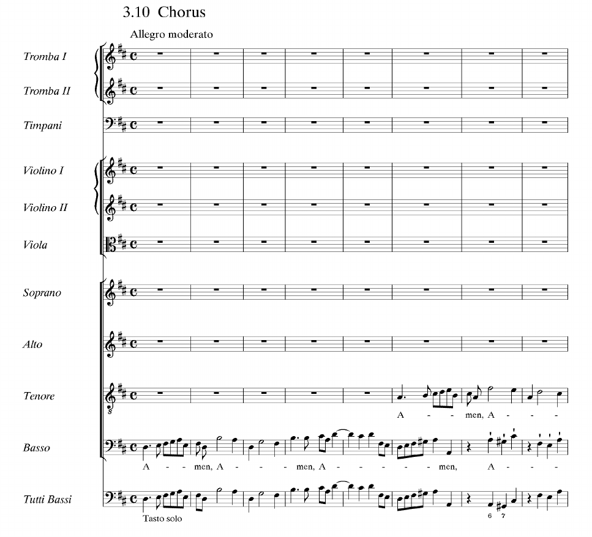

Introduction
Handel started work on Messiah in London on 22 August 1741. The text was put together by his friend Charles Jennens from the King James Bible and the Psalter of the Book of Common Prayer. Jennens’s text does not tell a story. It moves from prophecy to the birth of Christ, then the Passion, the resurrection and the hope of life after death. Handel finished the score in 24 days, on 14 September.
The first performance was in Dublin on 13 April 1742, at the new music hall on Fishamble Street, where Handel had been giving a season of concerts. It was a charity benefit, for prisoners and for two hospitals, and Handel led it with singers from the choirs of the city’s two cathedrals. About 700 people crowded in, and the notice asked ladies to leave their hoops at home and gentlemen their swords. London was cooler: when Handel brought the work to Covent Garden on 23 March 1743 it was advertised as “A New Sacred Oratorio” and got a mixed welcome. It became a fixture only after 1750, when Handel began giving it every year as a benefit for the Foundling Hospital.
There is no single “right” Messiah. Handel kept adjusting it to suit the singers he had, and he wrote alternative versions of several arias. Scores and recordings therefore differ. The numbers in this guide follow the Schering–Soldan score, where alternates are marked a and b, and they match the track numbers on the recording used here.
Three things to carry into every number:
- Recitative, aria, chorus. Each part is a chain of short numbers. Recitatives tell the story quickly, arias dwell on one feeling, and choruses give the crowd’s reaction. Most numbers last only a few minutes.
- Words you can hear. Handel paints single words in the music: “exalted” is lifted in a long run, “gone astray” wanders off, and “trumpet” gets a real trumpet.
- Texture tells you what is happening. Voices entering one after another (a fugue) build excitement, and voices singing together in chords sound like a statement. Listen for which one Handel chooses.
The sound
The orchestra is small and old-fashioned, nothing like a full Romantic one. The Schering–Soldan score lists two oboes, two bassoons, two trumpets, timpani, strings, harpsichord and organ. There are no flutes, clarinets, horns or trombones. The oboes and bassoons are marked with an asterisk because they appear only in the original orchestral parts, not in Handel’s autograph score. The trumpets and timpani are used sparingly. In the CCARH score, trumpets appear in just five numbers: “Glory to God” (two trumpets), “Hallelujah,” “The trumpet shall sound” (a single trumpet), “Worthy is the Lamb” and “Amen.” Timpani join the trumpets in “Hallelujah,” “Worthy is the Lamb” and “Amen.” That makes each of their entries an event. In the rest of the work the sound is that of the strings, with the harpsichord and organ keeping the harmony going underneath.
Part the First
Listening map
- ▶ SINFONYThe overture. A slow, heavy Grave in E minor with dotted rhythms, then a quicker Allegro moderato in which the lines enter one after another, like a fugue.
- ▶ 1 · COMFORT YEThe tenor’s first words, over soft strings. After the minor-key overture the key brightens to E major.
- ▶ 2 · EV’RY VALLEYA tenor aria. On “exalted” the voice is stretched into a long run of notes, as if the valley were being lifted.
- ▶ 3 · AND THE GLORY OF THE LORDThe first chorus, and the first time the whole choir and orchestra are heard together. Listen for the same few ideas passed from voice to voice.
- ▶ 4 · THUS SAITH THE LORDA bass recitative with the strings joining in, stern and short.
- ▶ 5 · BUT WHO MAY ABIDEAn aria that opens with a question. Handel rewrote it more than once; the CCARH score prints versions for bass, alto and soprano.
- ▶ 6 · AND HE SHALL PURIFYA quick chorus. Running notes ripple through the voices.
- ▶ 7 · BEHOLD, A VIRGINA very short alto recitative that announces “Emmanuel.”
- ▶ 8–9 · O THOU THAT TELLESTAn alto aria, then the chorus takes up the same tune. Apple Music plays both as one track.
- ▶ 10 · FOR BEHOLD, DARKNESSA bass recitative on the darkness that covers the earth.
- ▶ 11 · THE PEOPLE THAT WALKED IN DARKNESSA bass aria in which the music seems to feel its way along.
- ▶ 12 · FOR UNTO US A CHILD IS BORNThe sopranos enter alone and quietly, and the other voices follow. Later the music bursts into full chords on “Wonderful, Counsellor, the mighty God.” See the first excerpt below.
- ▶ 13 · PIFAThe pastoral symphony: no voices, eleven bars of gentle rocking 12/8, over a held bass. The name is usually explained as a reference to the pipers who played in Italy at Christmas.
- ▶ 14 · THERE WERE SHEPHERDSThe soprano tells the story in a run of short recitatives. The strings join in at “And suddenly.”
- ▶ 15 · GLORY TO GODThe angels’ chorus, and the first appearance of trumpets in the work. Handel marks them as if heard from far off.
- ▶ 16 · REJOICE GREATLYA bright, bouncing soprano aria with quick runs on “rejoice.”
- ▶ 17 · THEN SHALL THE EYES OF THE BLINDA short recitative. This recording uses the alto version (17a); the score prints a soprano one as well.
- ▶ 18 · HE SHALL FEED HIS FLOCKA gentle, rocking aria. This recording uses the soprano-and-alto duet version (18a).
- ▶ 19 · HIS YOKE IS EASYA light chorus that closes the first part.

img/m1-sinfonia.png.
img/m1-unto-us.png.
img/m1-pifa.png.
img/m1-glory.png.What to listen for
Notice how restrained the sound is. Apart from the Sinfony and the Pifa, the first part is voices with strings, and the first trumpets do not arrive until “Glory to God,” where Handel asks for them to sound from a distance. In “For unto us,” notice how the sopranos begin alone, and how the other voices and the orchestra gather behind them.
↑ Back to topPart the Second
Listening map
- ▶ 20 · BEHOLD THE LAMB OF GODThe mood changes completely. The Passion begins with a slow, weighty chorus (marked Largo).
- ▶ 21 · HE WAS DESPISEDThe alto aria. A slow, sighing Largo in E-flat major, with a faster, harder middle section on “He gave His back to the smiters.”
- ▶ 22 · SURELY HE HATH BORNE OUR GRIEFSA grave chorus, the voices singing together in thick chords.
- ▶ 23 · AND WITH HIS STRIPES WE ARE HEALEDA fugue: the voices enter one after another on the same rising idea.
- ▶ 24 · ALL WE LIKE SHEEPA chorus that scatters on purpose. See the excerpt below.
- ▶ 25 · ALL THEY THAT SEE HIMA tenor recitative: the mocking crowd.
- ▶ 26 · HE TRUSTED IN GODThe crowd’s mockery as a chorus, the voices tossing the words at each other.
- ▶ 27 · THY REBUKEA quiet tenor recitative of grief.
- ▶ 28 · BEHOLD AND SEEA brief tenor arioso.
- ▶ 29 · HE WAS CUT OFFA tenor recitative on the death.
- ▶ 30 · BUT THOU DIDST NOT LEAVEA short, bright tenor aria. The tone turns toward hope.
- ▶ 31 · LIFT UP YOUR HEADSA chorus in which the voices ask “Who is the King of Glory?” and answer.
- ▶ 32 · UNTO WHICH OF THE ANGELSA short tenor recitative.
- ▶ 33 · LET ALL THE ANGELS OF GODA lively chorus.
- ▶ 34 · THOU ART GONE UP ON HIGHThe score prints this aria for bass and for alto. This recording uses the alto version (34a).
- ▶ 35 · THE LORD GAVE THE WORDA chorus.
- ▶ 36 · HOW BEAUTIFUL ARE THE FEETA soprano aria. Handel made several versions of this one, including one with chorus.
- ▶ 37 · THEIR SOUND IS GONE OUTA chorus. The recording’s track title marks it as version 37a.
- ▶ 38 · WHY DO THE NATIONSA bass aria with angry, rushing runs on “rage.”
- ▶ 39 · LET US BREAK THEIR BONDS ASUNDERA chorus.
- ▶ 40 · HE THAT DWELLETH IN HEAVENA short tenor recitative.
- ▶ 41 · THOU SHALT BREAK THEMA tenor aria. The voice smashes the “potter’s vessel” in a burst of notes.
- ▶ 42 · HALLELUJAHThe famous chorus, in D major. Bars 1–3 are strings alone, and the chorus enters at bar 4. “For the Lord God omnipotent reigneth” arrives at bar 12, and the trumpets and timpani, silent until then, join in at bar 14. At bar 33 “The kingdom of this world” begins, and from about bar 50 the sopranos and altos hold “King of Kings” on long notes while the tenors and basses repeat “for ever and ever.” See the two excerpts below.

img/m2-despised.png.
img/m2-sheep.png.
img/m2-hallelujah.png.
img/m2-king-of-kings.png.What to listen for
Listen to how fast the mood turns from the Passion music (the Largo of “Behold the Lamb” and “He was despised”) to the mocking choruses and then to the shout of “Lift up your heads.” In “Hallelujah,” notice how long the trumpets wait before they join in, and how the chorus changes shape: bright shouts, then the plain chords of “The kingdom of this world,” then the layered “King of Kings.” The custom of standing for it is usually traced to George II rising in London, although there is no convincing evidence that he was even there.
↑ Back to topPart the Third
Listening map
- ▶ 43 · I KNOW THAT MY REDEEMER LIVETHA soprano aria that opens the third part.
- ▶ 44 · SINCE BY MAN CAME DEATHA chorus that opens Grave, which is to say slow and solemn.
- ▶ 45 · BEHOLD, I TELL YOU A MYSTERYA bass recitative that sets up the next aria.
- ▶ 46 · THE TRUMPET SHALL SOUNDA bass aria with a solo trumpet as its partner. In D major, 3/4, marked Pomposo, ma non allegro. See the excerpt below.
- ▶ 47 · THEN SHALL BE BROUGHT TO PASSA short alto recitative.
- ▶ 48 · O DEATH, WHERE IS THY STINGA duet for alto and tenor.
- ▶ 49 · BUT THANKS BE TO GODA chorus.
- ▶ 50 · IF GOD BE FOR USA slow, unhurried soprano aria.
- ▶ 51 · WORTHY IS THE LAMBA chorus with trumpets and timpani. On this recording the track includes the Amen that follows.
- ▶ 52 · AMENThe closing fugue. Bars 1–5 are the bass voice alone, the tenor answers at bar 6, and the trumpets and timpani are still waiting. See the excerpt below.

img/m3-trumpet.png.
img/m3-amen.png.What to listen for
The third part is the shortest, and it turns from the story to personal belief. Notice how the trumpet aria is really a duet between a bass voice and a trumpet, and how long Handel makes the trumpet play before the voice comes in. The ending is the opposite of the Hallelujah’s opening shout: the “Amen” starts with a single voice, and the other voices follow.
↑ Back to topRecommended recordings
| Conductor · Orchestra | Character |
|---|---|
| John Eliot Gardiner · Monteverdi Choir, English Baroque Soloists | Complete, on period instruments (released 1983). Its track numbers match the Schering–Soldan score. |
| Sir Colin Davis · London Symphony Orchestra | Modern instruments (2007 release): the full-bodied, modern-orchestra way to hear it. |
| Paul McCreesh · Gabrieli Consort & Players | Period instruments, in a version based on the one Handel directed at the Foundling Hospital in 1754 (1997 release). |
| John Butt · Dunedin Consort | Period instruments, in the version of the Dublin premiere of 1742 (2006 release). |